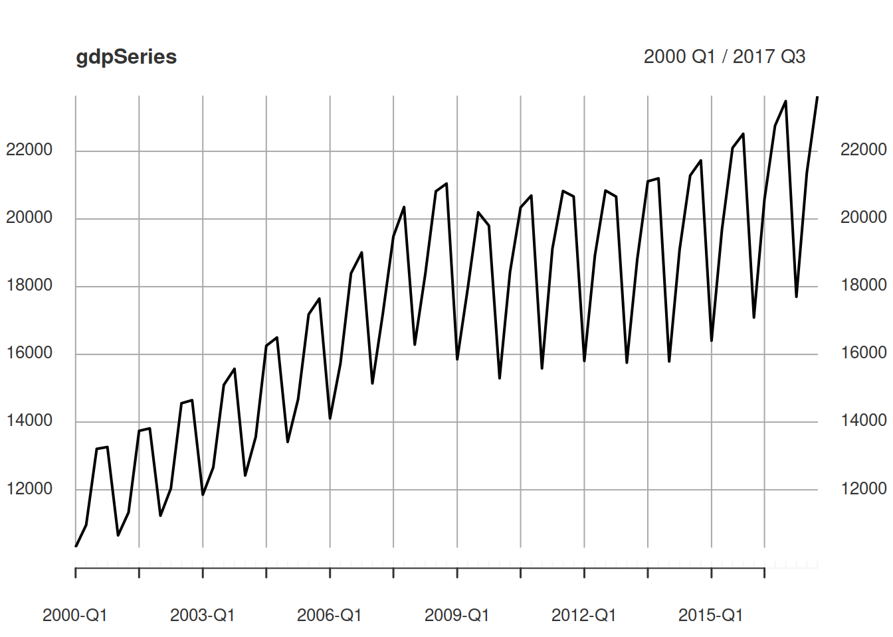
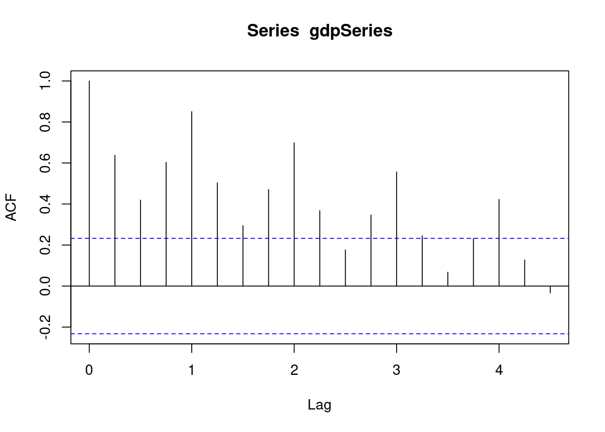
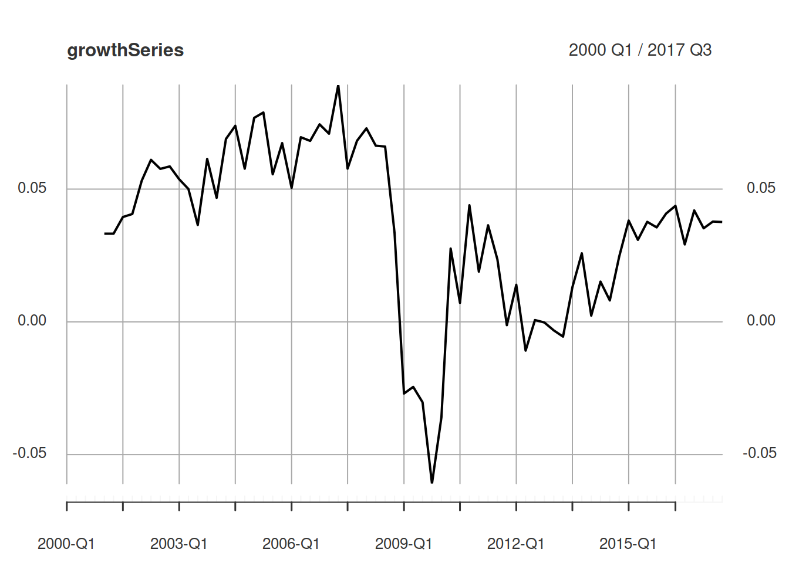
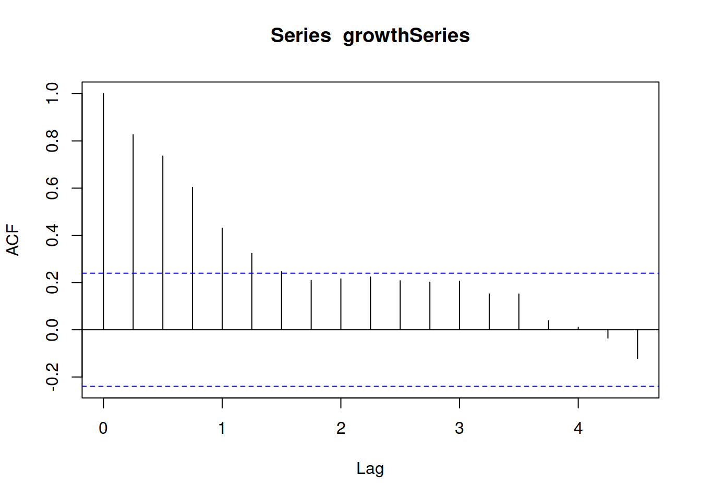
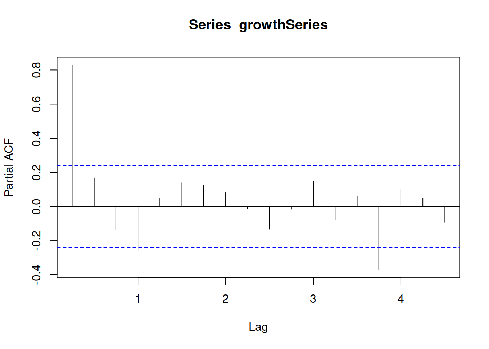
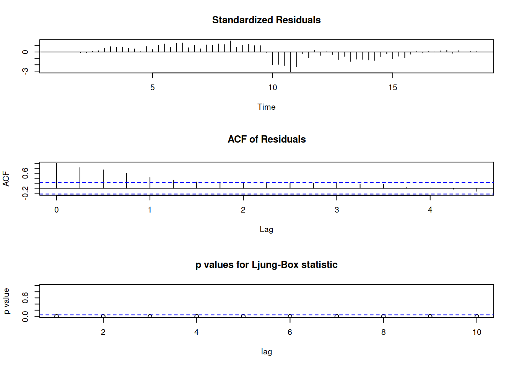
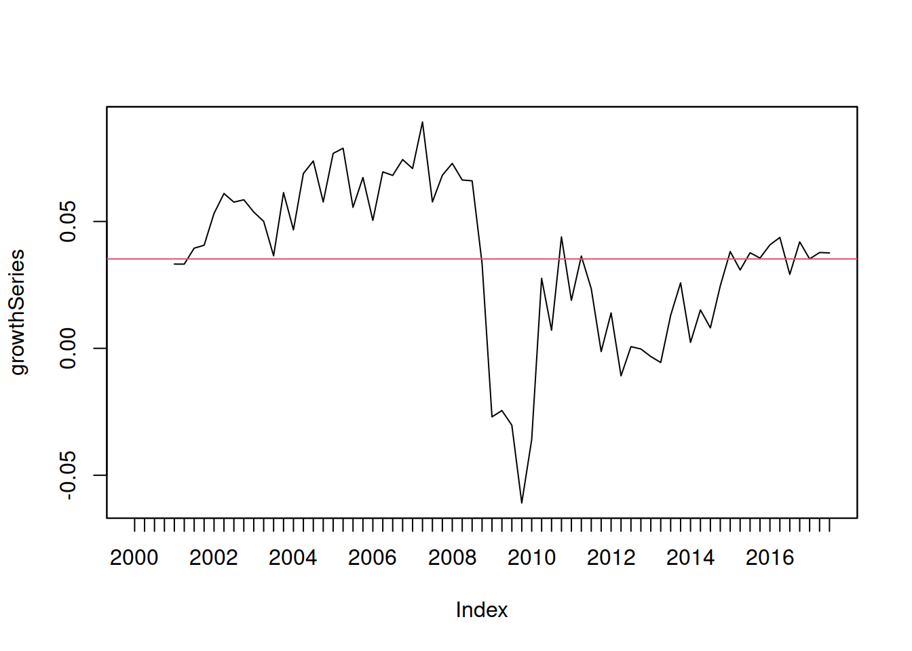
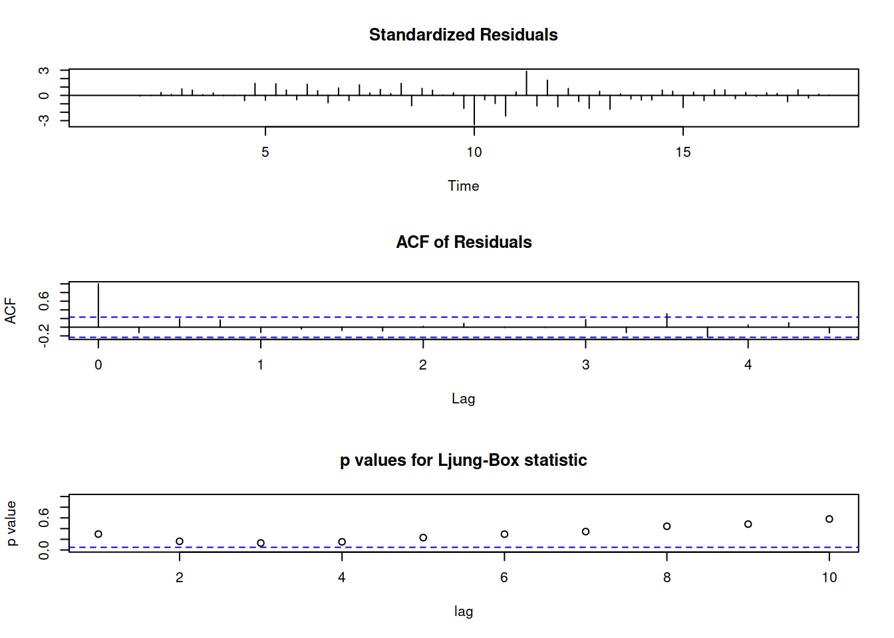

Chapter 3 Fitting arima models
Let us look at a real dataset of Bulgarian quarterly GDP figures from 2000 to 2017. Our goal will be to select a mathematical model for the quarterly GDP growth rates.
library(xts)
# a) Read data
gdp <- read.csv('https://raw.githubusercontent.com/feb-uni-sofia/timeseries-20202021/main/data/gdp_bg_qrt_2000-2017.csv')
## Create a time index from the column names "Index" in the gdp dataset.
timeIndex <- as.yearqtr(gdp$Index, format = '%YQ%q')
## Combine the values of the GDP (column called "GDP") and the time index to create
## a time series object.
gdpSeries <- xts(gdp$GDP, order.by = timeIndex)Before we compute the quarterly growth rates we will first examine the original series.

 A prominent feature in the dataset is a strong seasonal effect. Furthermore, the data appears to have a positive trend at least until 2009.
Let us denote the data in this time series with \[ y_{1}, y_{2}, y_{3},\ldots,y_{T}\\ \] where \(t = 1\) corresponds to the first quarter of 2000 and \(t = T = 71\) corresponds to the third quarter of 2017 (the last observation in the dataset).
To compute the growth rates for each quarter compared to the same quarter during the previous year we will use a continuous growth rate defined as follows:
\[ growthRate_{t} = \frac{y_{t} - y_{t - 1}}{y_{t - 4}} \approx \log(y_{t}) - \log(y_{t - 4}) \]
## First we take the 4-th lag of the series and afterwards we take the difference
## between the log values of the original series and the log values of the lag(4-th lag)
growthSeries <- log(gdpSeries) - log(lag(gdpSeries, k = 4))3.1 Data exploration
In the previous section we have defined the growth rates we are about to model and we have computed the necessary growth rates series. Please note that the first four values of the growth series are missing (undefined), because the first quarter of 2001 is the first data point were we can apply the formula use to compute these growth rates. We cannot apply it to the last quarter of 2000, for example, because we lack data on the GDP in the last quarter of 1999.
Before we begin to build our model let us examine the plot of the series as well as its autocorrelation and partial autocorrelation plots.

## As the growth series contains missing values we must instruct acf and pacf to
## exclude these, otherwise acf/pacf will throw errors.
## Draw the autocorrelation plot
acf(growthSeries, na.action = na.omit)

The ACF plot show slowly decaying autocorrelations that disappear after approx. one year. This appears consistent with autoregressive models. The partial autocorrelation plot shows a single large and significat partial autocorrelation at lag 1. This is consistent with a first order autoregressive process so we will try fitting one as our next step.
3.2 Fit an AR(p) process
Based on the exploratory analysis we have chosen a AR(1) model for the GDP growth data.
\[ y_{t} = \delta + \alpha y_{t - 1} + u_{t}, u_{t} \sim WN(\sigma^2): \text{AR(1)} \]
This model has two coefficients that we need to estimate (learn) from the data: \(\delta\) and \(\alpha\). We will use the arima function to compute these estimates using a maximum likelihood method (not discussed in this class, but similar in spirit to the least squares method from the econometrics class).
## Similar to lm()
## ARIMA(p, d, q)
fitAR1 <- arima(growthSeries, order = c(1, 0, 0)) ## AR(1)
fitAR1 ## ar1: alpha##
## Call:
## arima(x = growthSeries, order = c(1, 0, 0))
##
## Coefficients:
## ar1 intercept
## 0.8152 0.0353
## s.e. 0.0665 0.0109
##
## sigma^2 estimated as 0.0003066: log likelihood = 175.4, aic = -344.79from the output of the arima function we obtain the estimates for \(\delta\) and \(\alpha\).
\[
\hat{y}_{t + 1} = \hat{\delta} + \hat{\alpha} y_{t}\\
\hat{\alpha} = 0.8152\\
\hat{\delta} = 0.0353\\
\hat{y_{t}} = 0.0353 + 0.8152\hat{y}_{t - 1}\\
\]
To compute a one-period ahead prediction using the fitted model, use the predict function.
## $pred
## Qtr4
## 18 0.03716986
##
## $se
## Qtr4
## 18 0.01751059We predict a 3.7% percent growth for the last quarter of 2017 (compared to the last quarter of 2016).
The predict function outputs two values: the point prediction and the estimated standard error of this prediction. To express the uncertainty inherent in the prediction we compute an approx. 95 percent prediction interval using the standard error.
An approximate 95% prediction interval for the growth rate in 2017Q4 is given by [0.03716986 - 20.01751059, 0.03716986 + 20.01751059] = [0.00214868, 0.07219104].
Note that ARIMA models in general are best suited for short-term predictions, because the quality of the prediction depends on the strength of the autocorrelations in the series (associations between present and past values). For periods far away from the latest observed value the ARIMA predictions collapse to the sample mean of the series.
## $pred
## Qtr1 Qtr2 Qtr3 Qtr4
## 18 0.03716986
## 19 0.03681630 0.03652808 0.03629314 0.03610162
## 20 0.03594551 0.03581825 0.03571451 0.03562994
## 21 0.03556101 0.03550482 0.03545901 0.03542167
## 22 0.03539124 0.03536642 0.03534620 0.03532971
## 23 0.03531627 0.03530532 0.03529639 0.03528911
## 24 0.03528317 0.03527834 0.03527439 0.03527118
## 25 0.03526856 0.03526642 0.03526468 0.03526326
## 26 0.03526210 0.03526116 0.03526039 0.03525977
## 27 0.03525925 0.03525884 0.03525850 0.03525822
## 28 0.03525800 0.03525781 0.03525766 0.03525754
## 29 0.03525744 0.03525736 0.03525729 0.03525724
## 30 0.03525720 0.03525716 0.03525713 0.03525711
## 31 0.03525709
##
## $se
## Qtr1 Qtr2 Qtr3 Qtr4
## 18 0.01751059
## 19 0.02259132 0.02541172 0.02712416 0.02820461
## 20 0.02890024 0.02935336 0.02965063 0.02984652
## 21 0.02997598 0.03006170 0.03011852 0.03015622
## 22 0.03018125 0.03019787 0.03020890 0.03021624
## 23 0.03022111 0.03022434 0.03022649 0.03022792
## 24 0.03022887 0.03022950 0.03022992 0.03023020
## 25 0.03023039 0.03023051 0.03023059 0.03023064
## 26 0.03023068 0.03023070 0.03023072 0.03023073
## 27 0.03023074 0.03023074 0.03023075 0.03023075
## 28 0.03023075 0.03023075 0.03023075 0.03023075
## 29 0.03023075 0.03023075 0.03023075 0.03023075
## 30 0.03023075 0.03023075 0.03023075 0.03023075
## 31 0.03023075## [1] 0.035242033.3 Model choice (1)
Up to now we have discussed how to estimate the coefficients of a given ARIMA model using the arima function and how to compute predictions with predict, but we didn’t question whether the model can adequately describe our data or not. A model that fits the data poorly will likely result in inadequate predictions.
Here we will discuss a graphical analysis of the model fit using tsdiag. In order to see how a poorly fitting model looks we will fit a AR(0) model to the data and examine it first.
\[ y_{t} = \delta + u_{t} \quad \text{AR(0)} \]
##
## Call:
## arima(x = growthSeries, order = c(0, 0, 0))
##
## Coefficients:
## intercept
## 0.0352
## s.e. 0.0038
##
## sigma^2 estimated as 0.0009676: log likelihood = 137.44, aic = -270.89After fitting the AR(0) model we will examine its residuals, defined as:
\[ r_{t} = y_{t} - \hat{y}_t \]

The tsdiag function produces three plots. The first one (top) show the standardised residuals of the model fit. For a good fit we expect to see standardised residuals that fluctuate around zero with a constant variance (fluctuations). This is not the case for the AR(0) fit. We that the residuals are positive (i.e. our model systematically underestimates the growth rates) before 2009 and are negative afterwards (i.e. our model systematically overestimates the growth rates). This points to a poor model choice. From the plot of the growth series data it is easy to see why this is happening. The AR(0) model has a single coefficient (\(\delta\)) and it effectively predicts each value of the series with the sample mean of the series.
## Plot the growth series
## Here we use plot.zoo instead of plot.xts as we usually do, because it
## is easier to draw the horizontal line at the sample mean of the series.
plot.zoo(growthSeries)
## Draw a horizontal line at the mean (0.03524)
abline(h = mean(growthSeries, na.rm = TRUE), col = 2) Because of the large shift after the financial crisis of 2009 the sample mean underestimates the growth rates before 2009 and overestimates the growth rates after that.
The next two plots are related and they show the autocorrelations of the residuals. Good model should not have residuals with significant autocorrelations. For the AR(0) models the residuals are strongly correlated (as seen from the bars in the second plot) and the autocorrelation disappears only after the first year (4-th lag).
The last plot show p-values of the Ljung-Box autocorrelations tests. The first point refers to the p-value of the Ljung-Box test for the first-order autocorrelation. It test the hypothesis:
\[ H_{0}: \rho_{1} = 0\\ H_{1}: \rho_{1} \neq 0 \] The p-value of this test lies below the blue line in the plot which is drawn at 0.05. As the p-value is less than 0.05 we would reject the null hypothesis. A good model should not allow us to reject this hypothesis.
The second point in the last plot corresponds to Ljung-Box test of the hypothesis:
\[ H_{0}: \rho_{1} = \rho_{2} = 0\\ H_{1}: \text{ at least one of } \rho_{1}, \rho_{2} \neq 0\\ \]
Again, the p-value of this test leads us to reject the null hypothesis.
Let us now turn to the diagnostic of our initial choice of a model, the AR(1) model.

We see that the first plot looks much better than the one of the AR(0) model as we do not observe systematic overestimation or underestimation.
Then next two plots also indicate an adequate fit as there are no significant autocorrelations in the residuals.
3.4 Model choice (2)
Up until now we have examined the goodness of fit diagnostic of the AR(1) process and concluded that there are no significant autocorrelations in its residuals. However, we could raise the question whether we could fare better (i.e. describe the data better) with a more complex model, for example AR(2).
The AR(2) model has one more parameter than the AR(1) model and is better able to fit more closely to the data.
When selecting a model for a time series our goal is to find the most parsimonious model (less coefficients) that can still adequately describe the structure of the data (mean, variance, autocorrelations). One model summary statistic that can aid us in this choice is the Akaike Information Criterion (AIC). Its value is low when the model fits the data closely but is penalised for the number of coefficients estimated in that model. Thus when using the AIC we will select the model with the lowest AIC value.